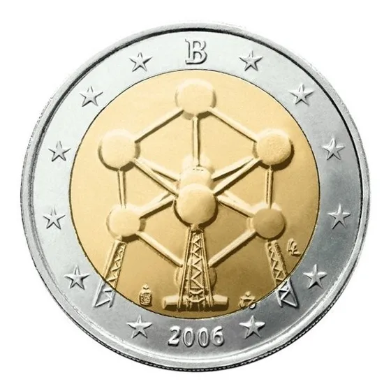
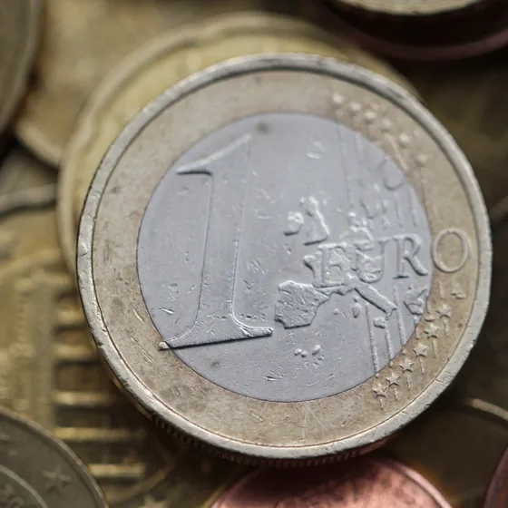
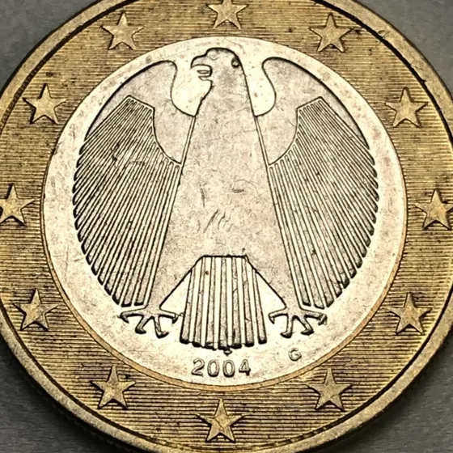

Pièces & erreurs de frappe
Un simple défaut peut transformer votre pièce en petite fortune
Contrairement aux commémoratives, une erreur de frappe ne se voit pas toujours à l'œil nu et sa valeur dépend de sa rareté, pas d'un tirage annoncé à l'avance. Certains défauts documentés valent plusieurs centaines, voire plusieurs milliers d'euros.
Des erreurs qui ont déjà rapporté gros
-

Rotation de matrice à 130°
Belgique 2006, 2 € Atomium
Valeur citée : jusqu'à 500 € selon la presse belge, contre environ 3 € pour une pièce normale
-

Double frappe
Italie 2002, 1 €
Valeur citée : 1 € pour une pièce courante ; plusieurs dizaines d'euros, voire davantage, pour une vraie double frappe nette et authentifiée
-

Revers renversé à 180°
Allemagne 2004, 1 €
Valeur citée : 1 000 à 3 800 € selon un site spécialisé, si le défaut est authentique et certifié
Valeurs issues de la presse et de sites spécialisés (RTBF, Coins&More, annonces de revendeurs), à titre indicatif et sans garantie. Elles supposent un défaut authentique : un faux défaut ou une pièce manipulée ne vaut rien de plus. Faites toujours expertiser la pièce avant d'en espérer un prix.
Les bons réflexes
Comment repérer une erreur ?
- 1
Centrage
Vérifiez que le motif est bien centré, sans marge vide anormale d'un côté.
- 2
Désaxage
Comparez l'alignement des deux faces : un décalage net entre elles est suspect.
- 3
Poids
Pesez la pièce : 7,5 g pour 1 €, 8,5 g pour 2 €.
- 4
Listel
Regardez la tranche : elle doit être striée (ou lisse selon la dénomination) comme d'habitude.
Estimation gratuite
Faites estimer votre pièce de 2 €
Deux photos suffisent. Réponse détaillée sous 48 h, sans engagement.
- ✓ 100 % gratuit & sans engagement
- ✓ Analyse par un numismate
- ✓ Données confidentielles
FAQ numismatique
Tout ce que vous devez savoir
Une autre question ? Posez-la dans le formulaire, nous y répondrons avec votre estimation.
C'est une pièce présentant une anomalie de fabrication : double frappe, rotation de matrice, désaxage, défaut de métal ou revers renversé.
Contrôlez le centrage, l'alignement des faces, le poids et le listel. Un défaut causé par l'usure ou un choc n'est pas une erreur de frappe : seul un examen permet de trancher.
Envoyez-nous des photos nettes du recto et du verso. Nos numismates examinent la pièce et vous indiquent si l'erreur est crédible, et la suite à donner.
Oui, elle peut en avoir, mais un certificat d'authenticité rassure les acheteurs et facilite la revente.
Cela dépend du type d'erreur, de sa rareté et de l'état de la pièce : de quelques euros à plusieurs milliers d'euros pour les défauts les plus rares.